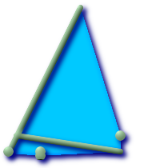

名前
ST_ConvexHull — 凸包(convex hull)は与えられた集合の全てのジオメトリを含む最小の閉じた凸ジオメトリです．
概要
geometry ST_ConvexHull(geometry geomA);
説明
凸包(convex hull)は与えられた集合の全てのジオメトリを含む最小の閉じた凸ジオメトリです．
凸包は，ジオメトリの集合に輪ゴムをかけて得られるジオメトリと見ることができます． これは縮小包みという点では似ている凹包(concave hull)と異なります(凹包はサポートされていません)．
通常はMULTI系まはたジオメトリカラムを使いますが，集計関数ではありません - ST_Collectと併用してST_ConvexHull(ST_Collect(somepointfield))とすると，ポイントの集合の凸包を得ることができます．
ポイント観察の集合を基にして，影響を受けた範囲を決定するのに使用します．
GEOSモジュールで実現しています
 このメソッドは OpenGIS Simple Features Implementation Specification for SQL 1.1.を実装するものです． s2.1.1.3
このメソッドは OpenGIS Simple Features Implementation Specification for SQL 1.1.を実装するものです． s2.1.1.3
このメソッドはSQL/MM仕様の実装です． SQL-MM 3: 5.1.16
この関数は三次元をサポートします．Zインデクスを削除しません．
例
--ポイント観察に基づいて，感染域の推定を得る SELECT d.disease_type, ST_ConvexHull(ST_Collect(d.the_geom)) As the_geom FROM disease_obs As d GROUP BY d.disease_type;

マルチラインストリングとマルチポイントとその凸包
SELECT ST_AsText(ST_ConvexHull(
ST_Collect(
ST_GeomFromText('MULTILINESTRING((100 190,10 8),(150 10, 20 30))'),
ST_GeomFromText('MULTIPOINT(50 5, 150 30, 50 10, 10 10)')
)) );
---st_astext--
POLYGON((50 5,10 8,10 10,100 190,150 30,150 10,50 5))